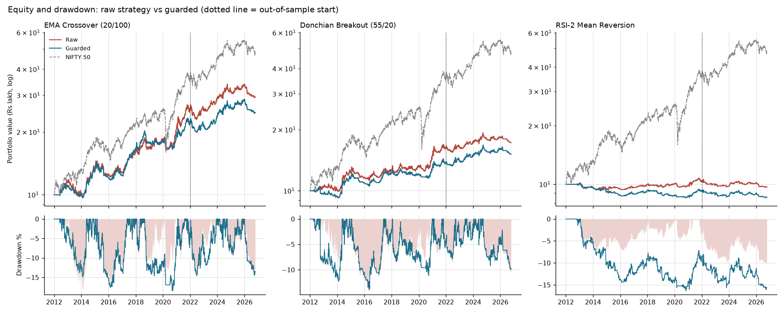
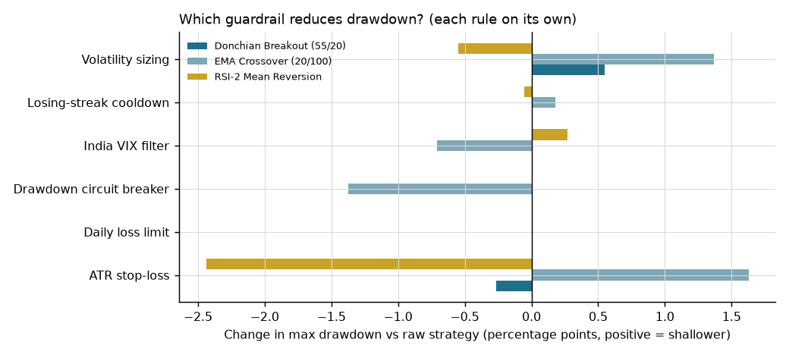
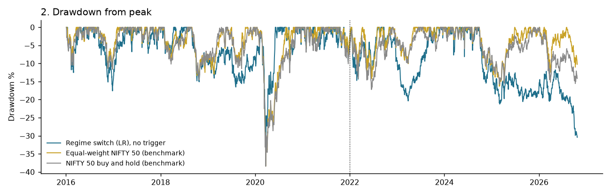

An enforceable risk layer for retail algorithmic trading on NSE, and a volatility-aware NIFTY 50 stock-selection study. Architecture, code, verified backtests, win/loss statistics and commercial viability.
Vansh Dave · Karthik Agarwal | B.Tech AI, 5th semester | Guide: Sailesh Kulkarni
pip install -r requirements.txt python verify.py
Checks the 67 bundled data files against their SHA-256 manifest, runs the 40 unit tests, re-runs both studies from scratch into a temporary folder and compares all 45 result files number by number with the submitted results/ folder. Expected verdict: ALL RESULTS REPRODUCED, in about 90 seconds. This report is generated from those files by report/build_report.py, which also checks every comparative claim in the text against them.
| 1 Executive summary |
| 2 How to verify (for the assessor) |
| 3 Architecture of the backend |
| 4 Code inventory and tests |
| 5 AlgoGuard backtest results |
| 6 Win/loss and trade statistics |
| 7 VolSelect results, win/loss and costs |
| 8 Commercial viability |
| 9 Corrections to our October results, and the independent review |
| 10 Limitations and files |
We built a working, tested trading engine for NSE equities whose risk rules sit inside the order path, so they are enforced, not advised. Every result reproduces exactly from the submitted code and data. Out of sample (2022 onward) the fixed, textbook rule set gave a shallower maximum drawdown than no rules on all three strategies, and a conservative profile cut it further. No strategy and no stock-selection model beats a passive benchmark on return. The product a company would buy is therefore the risk and compliance layer, not a return claim.
verify.py from a clean install| Question | Answer from the backtests |
|---|---|
| Do the strategies make money after costs? | EMA crossover 7.59% a year, Donchian 3.77%, RSI-2 −0.21% (2012–2026). NIFTY 50 buy and hold: 11.28%. None beats the index on return. |
| Do they carry less risk? | Yes. Max drawdown −18.3% (EMA) and −14.1% (Donchian) against NIFTY's −38.4%. EMA's return per unit of drawdown (Calmar 0.41) is higher than NIFTY's (0.29). |
| Win/loss | EMA wins 35% of trades, but its average win is 4.5× its average loss (profit factor 2.16). RSI-2 wins 59% and still loses money (profit factor 0.97). |
| Do the guardrails cut risk out of sample? | Yes, modestly. From 2022 the fixed v1 rules had a shallower max drawdown than no rules on all three strategies (EMA −14.54% vs −14.81%), and the Conservative profile cut it further on all three (EMA −11.26%). Over 2012–2026 the rules cost return (EMA 6.35% vs 7.59%). |
| Does tuning the rules on past data help? | No. Settings chosen on pre-2022 data (v2) looked better than v1 in sample on all three strategies and had a deeper drawdown than v1 out of sample on all three. We report it as a negative result and keep fixed rules. |
| VolSelect stock selection | Lost less than NIFTY and equal-weight NIFTY 50 in both crashes (COVID: −11.5% vs NIFTY −18.6%; 2022 H1 resilience model −4.0% vs −10.5%). But from 2022 it trails equal weight even before costs (14.5% vs 15.4% a year). No proven edge yet. |
From 1 April 2026 SEBI's retail algo framework applies to every stock broker: brokers carry responsibility for algos running on their APIs and must control, tag and audit them. 93% of individual F&O traders lost money between FY22 and FY24 (SEBI study, aggregate losses above Rs 1.8 lakh crore). AlgoGuard already implements what a broker or algo platform needs to offer retail algos safely: pre-trade blocks that can never add risk, a commitment lock that stops a user loosening limits in the heat of the moment, a complete audit log, and an order layer built around the SEBI rules. That is a B2B product. Strategy returns are not, and we do not sell them.
Re-running everything for this submission, and an independent code review, found six problems in the October version: a bug in one overfitting check, Yahoo placeholder bars on non-trading days, a stop-loss that bought straight back, a one-day misalignment in one table, a Sortino formula and library-version sensitivity. All are fixed and covered by tests or checks; several October slide numbers changed. Section 9 lists every change, before and after.
Everything runs on a normal laptop CPU with Python 3.11 to 3.13 (both tested), offline. No GPU, no API keys, no internet.
cd algoguard python -m venv .venv .venv\Scripts\activate (Windows) source .venv/bin/activate (macOS / Linux) pip install -r requirements.txt python verify.py
Expected output (also written to verify_report.txt):
[PASS] package versions match requirements.txt [PASS] data: 67/67 files match the manifest [PASS] unit tests: 40 passed [PASS] results/1_main_comparison.csv largest relative difference 0.0e+00 ... (45 result files) 45/45 result files reproduced. VERDICT: ALL RESULTS REPRODUCED
| Check | How |
|---|---|
| Same libraries | Compares installed versions with the exact pins in requirements.txt and warns on any difference. scikit-learn's gradient boosting fits differently across versions, which moves the VolSelect tables, so the pins matter. |
| Same input data | SHA-256 of every CSV in data/ against data/MANIFEST.sha256 (line endings normalised, so a Windows checkout passes). |
| Code correctness | Runs the 40 unit tests (section 4). |
| Results | Runs run.py and run_vs.py into a temporary folder, then compares every CSV and JSON in results/ and results/vs/ cell by cell (relative tolerance 1e-6; text must match exactly). |
--download before verifyingYahoo Finance revises its adjusted historical prices over time (dividends, splits), so freshly downloaded data moves the numbers slightly. That is a data difference, not a code difference, and the manifest check detects it at once. To test the code on new data afterwards: python run.py --download --force. The conclusions, not the second decimal, are what should hold.
From a clean unzip into an empty folder, with a fresh virtual environment installed from requirements.txt, verify.py reproduced every file. We also ran it with older libraries (pandas 2.2, numpy 1.26, scikit-learn 1.5): the AlgoGuard results and the regime forecast still matched exactly; the VolSelect tables moved, mainly because scikit-learn's gradient boosting changed between versions, which is why the versions are pinned and checked (the verifier prints a warning first if they differ). Model fits are deterministic (gradient boosting uses random_state=0), so there is no random seed to get lucky with.
| Command | What it does |
|---|---|
python -m pytest -q tests | 40 unit tests |
python run.py | AlgoGuard: all 11 experiments, writes results/ |
python run_vs.py | VolSelect walk-forward study, writes results/vs/ |
python report/build_report.py | Rebuilds this report from the result files and checks its claims |
python paper_trade.py --days 60 | Day-by-day paper replay through the broker layer |
streamlit run volselect_app.py | VolSelect site: overview, live market and research (live at volselect.streamlit.app) |
streamlit run app.py | AlgoGuard site: the risk-layer dashboard (live at algoguard.streamlit.app) |
One engine runs from market data to the order. Risk rules can only block a new entry or force an exit; they can never open a position. Every intervention is written to an audit log with the date, the rule and the reason.
| When | What happens | Data it may use |
|---|---|---|
| Close of day t−1 | Signals computed, risk state updated (losses, drawdown, VIX) | Prices up to and including the close of t−1 |
| Open of day t | Exits, then entries, fill at the open price plus 0.15% cost | Today's open (as the fill price only) |
| During day t | Protective ATR stops fill at the stop, or at the open if it gapped through | Today's low (stop trigger only) |
| Close of day t | Mark to market, risk state updated | Today's close |
Tested, not just claimed: test_no_lookahead, test_features_have_no_lookahead, test_regime_forecast_has_no_lookahead and test_portfolio_has_no_lookahead multiply every price after day k by 3 and assert that every result up to day k is unchanged. Models train only on rows whose 10-day target is complete before the cut-off date, and GARCH parameters are fitted on data before each forecast year.
| Rule | Setting | Action |
|---|---|---|
| ATR stop-loss | entry − 3 × ATR(14) | force exit during the day; no re-buy until the strategy's own signal resets |
| Daily loss limit | portfolio −2% in a day | no new entries for 2 sessions |
| Losing-streak cooldown | 3 losing trades in a row | no new entries for 5 sessions |
| Drawdown circuit breaker | −15% from peak | sell all (or block entries only), halt 20 sessions, re-arm |
| India VIX filter | VIX above 25 | no new entries |
| Volatility sizing | target 25% vol, cap 15% per position | scales position size |
Daily OHLCV from Yahoo Finance (dividend and split adjusted), cached as CSV and bundled. On loading, Yahoo's placeholder bars (open = high = low = close with no volume, written for days a stock did not trade) are dropped, so no trade can fill on a holiday or at a made-up price. AlgoGuard trades only on dates every stock traded; VolSelect works on the NIFTY calendar and treats a stock's missing day as a no-trade day.
3,756 lines of Python including tests, no notebooks, every module importable and tested. Line counts are measured from the submitted files when this report is built.
| File | Lines | Responsibility |
|---|---|---|
algoguard/backtest.py | 133 | Event-driven daily portfolio backtester: costs, sizing, stops (no re-buy until the signal resets), cash, exposure, trades |
algoguard/broker.py | 93 | 10 orders/s limiter, MPP-protected limit prices, daily login, strategy tags, SimBroker, Kite Connect mapping |
algoguard/commitment.py | 86 | Commitment lock: tightening applies at once, loosening waits 1 h / 24 h / 7 days |
algoguard/data.py | 163 | Download (yfinance), defensive CSV reader that drops Yahoo's placeholder bars, date alignment, synthetic data for offline tests |
algoguard/explain.py | 70 | Plain-English explanation of any trading day from the audit log |
algoguard/features.py | 65 | 19 per-stock features on the NIFTY calendar and the 10-day excess-return target |
algoguard/indicators.py | 58 | EMA, SMA, RSI, ATR, realised vol, MACD, ADX, stochastic, OBV, Bollinger %B |
algoguard/live.py | 166 | Live mode: forward paper-trading record (append-only ledger), plan for the next open, VolSelect snapshot |
algoguard/metrics.py | 86 | CAGR, Sharpe, Sortino, drawdown, Calmar, VaR, trade statistics (win/loss), calendar-year returns |
algoguard/portfolio.py | 126 | Weekly top-K inverse-vol portfolio, drawdown trigger that retrains and switches approach |
algoguard/regime.py | 98 | GARCH(1,1) fitted on past data only, logistic regime forecast, accuracy vs a naive baseline |
algoguard/risk.py | 152 | RiskConfig, the six rules, three profiles, ablation helpers, RiskManager state machine with audit log |
algoguard/scanner.py | 31 | Stocks that calmed while India VIX rose |
algoguard/selection.py | 84 | Per-regime models (LR, GB), scoring, coefficients, information coefficients |
algoguard/sites.py | 3 | Addresses of the two public dashboards |
algoguard/strategies.py | 56 | EMA crossover, Donchian breakout, RSI-2 mean reversion (0/1 target positions) |
algoguard/universe.py | 54 | NIFTY 50 constituents with sectors, download and load |
algoguard/v2.py | 85 | Strategy-aware guardrails: 16-setting menu, in-sample selection on truncated data, yearly walk-forward |
run.py | 390 | AlgoGuard experiments 1–11 → results/ |
run_vs.py | 365 | VolSelect walk-forward study → results/vs/ |
verify.py | 146 | Independent re-run check (section 2) |
live_update.py | 63 | Daily live update after the NSE close (run by GitHub Actions at 18:00 IST); writes live/ only |
paper_trade.py | 75 | Paper replay through the broker layer (order path only) |
app.py | 12 | Entry point of the AlgoGuard site |
volselect_app.py | 19 | Entry point of the VolSelect site (overview, live market, research) |
views/_ui.py | 33 | Shared helpers for the VolSelect pages |
views/algoguard_dashboard.py | 275 | AlgoGuard site: profiles, rule toggles, commitment lock, explain-a-day, scanner, audit log |
views/live_market.py | 147 | VolSelect site, live page: self-refreshing delayed quotes, forward record, next-open plan |
views/overview.py | 118 | VolSelect site, landing page: market state today, what it does, why to trust it, honest evidence |
views/research.py | 97 | VolSelect site, research page: walk-forward evidence, win/loss, costs, forecast accuracy, audit log |
| File | Tests | What they prove |
|---|---|---|
test_engine.py | 9 | No look-ahead; signals are 0/1; raw has no interventions; VIX rule blocks all entries at VIX 99; costs reduce equity; never leveraged; MPP price and 10 orders/s limit; block-only breaker never force-sells; no re-buy after a stop until the signal resets |
test_commitment.py | 8 | Tightening applies at once; loosening waits; changing the request restarts the clock; cannot escape by switching the lock off or shortening the wait; profiles ordered by risk |
test_dashboard.py | 6 | Both sites and all four pages render on the bundled data without an exception (live page offline) |
test_vs.py | 6 | No look-ahead in features, regime forecast and portfolio; drawdown trigger stays invested and logs; equal weight holds every stock |
test_live.py | 4 | Live mode: flat until the record starts; ledger is append-only and never rewrites a stored day; VIX block shows in the plan; today's bar ignored until final |
test_explain.py | 3 | Cooldown day, blocked entry, quiet and closed days explained correctly |
test_scanner.py | 2 | Flags a stock that calms while VIX rises; flags nothing when VIX falls |
test_trade_stats.py | 2 | Win/loss counts, profit factor, losing streak, holding period, calendar returns on a hand-checked example |
12 NIFTY large caps, 02 Jan 2012 to 16 Oct 2026 (3,645 sessions), Rs 10 lakh, 0.15% cost per side, signals at the close, fills at the next open. Strategy parameters are textbook defaults fixed before testing. Source: results/1_main_comparison.csv.
| Strategy | Risk layer | CAGR % | Sharpe | Max DD % | Worst day % | Days < −2% | Calmar | Trades | Exposure % |
|---|---|---|---|---|---|---|---|---|---|
| EMA crossover | No rules | 7.59 | 0.14 | −18.33 | −6.89 | 27 | 0.41 | 289 | 69.5 |
| Guarded v1 | 6.35 | 0.03 | −18.45 | −7.30 | 20 | 0.34 | 289 | 62.0 | |
| Donchian breakout | No rules | 3.77 | −0.32 | −14.13 | −5.29 | 8 | 0.27 | 351 | 44.1 |
| Guarded v1 | 2.85 | −0.48 | −13.98 | −7.57 | 5 | 0.20 | 348 | 39.0 | |
| RSI-2 mean reversion | No rules | −0.21 | −1.75 | −10.29 | −2.69 | 1 | −0.02 | 1,161 | 12.8 |
| Guarded v1 | −1.03 | −2.06 | −16.34 | −2.02 | 1 | −0.06 | 1,095 | 12.8 | |
| NIFTY 50 | Buy and hold | 11.28 | 0.36 | −38.44 | −12.98 | 86 | 0.29 | – | 100 |
Sharpe uses a 6.5% risk-free rate while uninvested cash earns nothing in the backtest, which pulls down the Sharpe of partly invested strategies. Stock prices include dividends; NIFTY 50 (^NSEI) is a price index, so comparisons with NIFTY favour the strategies by roughly its dividend yield (about 1.2–1.5% a year).

results/chart_1_equity_drawdown.pngSources: results/7_v2_comparison.csv, results/11_risk_profiles.csv. v2 picks each strategy's breaker mode, VIX filter and stop distance from a 16-setting menu by best Calmar on data cut at 31 Dec 2021. It chose: EMA 4× ATR stop, VIX filter off, breaker sells all; Donchian no stop, VIX filter off, breaker sells all; RSI-2 no stop, VIX filter off, breaker sells all.
| Strategy | Layer | CAGR % 2012–21 | Max DD % 2012–21 | CAGR % 2022+ | Max DD % 2022+ |
|---|---|---|---|---|---|
| EMA crossover | No rules | 9.86 | −18.33 | 2.77 | −14.81 |
| Guarded v1 (fixed textbook rules) | 8.26 | −18.45 | 2.24 | −14.54 | |
| Guarded v2 (tuned on pre-2022 data) | 9.60 | −17.07 | 2.32 | −15.13 | |
| Conservative profile | – | – | 1.80 | −11.26 | |
| Donchian breakout | No rules | 5.04 | −14.13 | 1.13 | −10.59 |
| Guarded v1 (fixed textbook rules) | 3.26 | −13.98 | 2.00 | −9.95 | |
| Guarded v2 (tuned on pre-2022 data) | 5.01 | −13.58 | 1.51 | −11.86 | |
| Conservative profile | – | – | 1.87 | −8.80 | |
| RSI-2 mean reversion | No rules | 0.42 | −8.18 | −1.50 | −8.98 |
| Guarded v1 (fixed textbook rules) | −0.72 | −16.34 | −1.66 | −8.83 | |
| Guarded v2 (tuned on pre-2022 data) | 0.03 | −11.12 | −1.46 | −9.60 | |
| Conservative profile | – | – | −1.24 | −7.35 | |
| NIFTY 50 | Buy and hold | 13.80 | −38.44 | 5.86 | −16.47 |
From 2022 the untuned v1 rules had a shallower drawdown than no rules on all three strategies, and the Conservative profile (set by hand before testing) cut it further on all three: EMA −11.26%, Donchian −8.80%, RSI-2 −7.35%, against −14.81%, −10.59% and −8.98% with no rules. The mechanism is plain: the profile holds less (48% invested on EMA against 70%).
v2 beat v1 in sample on all three strategies (EMA Calmar 0.56 vs 0.45) and then had a deeper drawdown than v1 out of sample on all three. That is the overfitting signature our protocol was built to expose, and it is why we lead with fixed rules and hand-set profiles.
Every 1 January the v2 setting is re-picked from the same menu using only earlier data, then traded for that year (results/8_walk_forward.csv). The stop was dropped in 30 of 36 yearly picks.
| Strategy | Layer | CAGR % | Max DD % | Days < −2% | Calmar |
|---|---|---|---|---|---|
| EMA crossover | No rules | 6.94 | −16.30 | 24 | 0.43 |
| Guarded v1 | 5.58 | −18.45 | 18 | 0.30 | |
| Walk-forward v2 | 6.37 | −19.20 | 22 | 0.33 | |
| Donchian breakout | No rules | 2.89 | −14.13 | 8 | 0.20 |
| Guarded v1 | 2.34 | −13.98 | 4 | 0.17 | |
| Walk-forward v2 | 2.90 | −13.58 | 5 | 0.21 | |
| RSI-2 mean reversion | No rules | 0.24 | −10.29 | 1 | 0.02 |
| Guarded v1 | −0.54 | −9.69 | 1 | −0.06 | |
| Walk-forward v2 | 0.05 | −10.85 | 1 | 0.00 |
On return over 2015–2026 the rule sets at best tie no rules: Donchian Walk-forward v2 is ahead by only 0.003 points a year, and every other one is behind. v1 had the fewest days below −2% on EMA and Donchian.
Three profiles, set by hand before testing (risk.py, PROFILES), show one engine serving different risk appetites. Source: results/11_risk_profiles.csv.
| Strategy | Profile | CAGR % 2012–2026 | Max DD % 2012–2026 | Exposure % | CAGR % 2022+ | Max DD % 2022+ |
|---|---|---|---|---|---|---|
| EMA crossover | No rules | 7.59 | −18.33 | 69.5 | 2.77 | −14.81 |
| Conservative | 4.39 | −16.98 | 48.1 | 1.80 | −11.26 | |
| Balanced (= v1) | 6.35 | −18.45 | 62.0 | 2.24 | −14.54 | |
| Aggressive | 8.71 | −19.17 | 75.3 | 2.29 | −17.14 | |
| Donchian breakout | No rules | 3.77 | −14.13 | 44.1 | 1.13 | −10.59 |
| Conservative | 2.39 | −10.66 | 29.3 | 1.87 | −8.80 | |
| Balanced (= v1) | 2.85 | −13.98 | 39.0 | 2.00 | −9.95 | |
| Aggressive | 3.77 | −17.75 | 52.1 | 0.99 | −13.50 | |
| RSI-2 mean reversion | No rules | −0.21 | −10.29 | 12.8 | −1.50 | −8.98 |
| Conservative | −1.03 | −16.40 | 8.8 | −1.24 | −7.35 | |
| Balanced (= v1) | −1.03 | −16.34 | 12.8 | −1.66 | −8.83 | |
| Aggressive | −0.58 | −13.77 | 17.3 | −2.01 | −12.15 |

results/3_ablation.csvOn EMA the ATR stop (+1.63 points) and volatility sizing (+1.37) made the drawdown shallower, while the drawdown breaker (−1.37) and the VIX filter (−0.71) made it deeper. On RSI-2, which has its own exit rule, the stop made it deeper (−2.44). Rules have to fit the strategy they protect.
The breaker in the COVID crash, from the audit log. On 12 Mar 2020 EMA v1 was more than 15% below its peak; the breaker sold everything at the next open, when NIFTY opened at 9,108. NIFTY then fell to 7,610 by 23 Mar, and the 20-session halt ended on 15 Apr with NIFTY at 8,925. Every block, halt and re-arm is in results/audit_log_ema.csv with its date and reason.
Across 10 EMA parameter pairs, v1 had a shallower mean max drawdown (−17.0% against −19.9%) at a lower mean Sharpe (0.06 against 0.15), so the drawdown result is not one lucky setting (chart_3_robustness_grid.png, 4_robustness.csv). At 0.30% per side EMA still earns 7.16%; RSI-2, with 1,161 trades, falls to −2.14%: high-turnover strategies do not survive Indian delivery costs.
Every round trip, after costs on both sides; a trade that only covered its costs counts as a loss. "2022+" counts trades entered from 1 Jan 2022. Positions open on the last day are closed at the last close for these statistics only. Source: results/9_trade_stats.csv (also best and worst trade, expectancy in rupees, and v2).
| Strategy · layer | Trades entered | Trades | Win rate % | Win : loss | Avg win % | Avg loss % | Payoff | Profit factor | Expectancy % | Max losing streak | Avg hold (days) |
|---|---|---|---|---|---|---|---|---|---|---|---|
| EMA · no rules | 2012–2026 | 289 | 34.6 | 0.53 | 26.54 | −5.86 | 4.53 | 2.16 | 5.35 | 17 | 144 |
| EMA · no rules | 2022+ | 95 | 33.7 | 0.51 | 19.45 | −5.76 | 3.37 | 1.60 | 2.73 | 16 | 124 |
| EMA · v1 | 2012–2026 | 289 | 31.5 | 0.46 | 25.63 | −5.41 | 4.73 | 2.04 | 4.36 | 13 | 128 |
| EMA · v1 | 2022+ | 94 | 30.9 | 0.45 | 16.60 | −5.00 | 3.32 | 1.54 | 1.66 | 19 | 108 |
| Donchian · no rules | 2012–2026 | 351 | 42.2 | 0.73 | 12.66 | −5.68 | 2.23 | 1.55 | 2.05 | 10 | 77 |
| Donchian · no rules | 2022+ | 107 | 39.3 | 0.65 | 10.12 | −5.15 | 1.97 | 1.24 | 0.85 | 9 | 71 |
| Donchian · v1 | 2012–2026 | 348 | 38.2 | 0.62 | 12.68 | −5.48 | 2.31 | 1.42 | 1.46 | 16 | 65 |
| Donchian · v1 | 2022+ | 106 | 36.8 | 0.58 | 10.41 | −4.75 | 2.19 | 1.35 | 0.83 | 9 | 64 |
| RSI-2 · no rules | 2012–2026 | 1,161 | 59.0 | 1.44 | 1.93 | −2.84 | 0.68 | 0.97 | −0.03 | 9 | 7 |
| RSI-2 · no rules | 2022+ | 361 | 56.0 | 1.27 | 1.78 | −2.80 | 0.64 | 0.80 | −0.24 | 9 | 7 |
| RSI-2 · v1 | 2012–2026 | 1,095 | 58.4 | 1.41 | 1.89 | −2.90 | 0.65 | 0.87 | −0.10 | 10 | 7 |
| RSI-2 · v1 | 2022+ | 354 | 55.9 | 1.27 | 1.76 | −2.78 | 0.63 | 0.81 | −0.24 | 10 | 7 |
Win : loss = winning trades ÷ losing trades. Payoff = average win ÷ |average loss|. Profit factor = gross rupee profit ÷ gross rupee loss. Expectancy = average return per trade.
EMA loses about two trades out of three and still makes money: a winner averages 26.5% and a loser −5.9%. Profit factor 2.16 over 289 trades, and 1.60 on trades entered after 2022.
RSI-2 wins 59% of its trades, the best win rate here, and still loses money: its average loss (−2.8%) is bigger than its average win (1.9%), and 1,161 trades pay costs every time. Profit factor 0.97.
Commercially this is the core user problem: an EMA-type strategy shows its owner long runs of losing trades before the next big winner (up to 19 in a row across the EMA variants and periods in the table). That is when retail users abandon a system or switch off its rules, and exactly what the commitment lock is built to stop.
| Year | 2012 | 2013 | 2014 | 2015 | 2016 | 2017 | 2018 | 2019 | 2020 | 2021 | 2022 | 2023 | 2024 | 2025 | 2026* |
|---|---|---|---|---|---|---|---|---|---|---|---|---|---|---|---|
| EMA, no rules | 15.1 | −11.1 | 30.7 | −5.8 | 1.5 | 26.4 | 4.3 | 9.2 | 12.5 | 23.6 | 0.2 | 13.6 | 7.0 | 8.0 | −12.4 |
| EMA, v1 | 9.9 | −9.0 | 31.0 | −7.5 | 2.5 | 34.4 | 6.5 | 0.9 | 6.0 | 16.3 | −2.9 | 11.1 | 9.3 | 9.4 | −12.9 |
| NIFTY 50 | 23.9 | 6.8 | 31.4 | −4.1 | 3.0 | 28.6 | 3.2 | 12.0 | 14.9 | 24.1 | 4.3 | 20.0 | 8.8 | 10.5 | −11.4 |
*2026 to 16 Oct. All strategies: results/10_calendar_returns.csv. EMA v1 beat NIFTY in 2017, 2018, 2024; it lagged in strong bull years, as a partly-in-cash strategy should.
All 50 current NIFTY 50 stocks. Every model (volatility regime and stock selection) is refitted each 1 January on past data only and used for that year, 2016 to 2026; 2022 onward is reported on its own. Weekly rebalance, top 10, inverse-volatility weights, 0.15% per side. Source: results/vs/table_*.csv. Crash columns are the return over 14 Feb–30 Apr 2020 and Jan–Jun 2022.
| Approach | CAGR % 2016–26 | Max DD % | Sharpe | CAGR % 2022+ | Max DD % 2022+ | COVID crash % | 2022 H1 % | Turnover ×/yr |
|---|---|---|---|---|---|---|---|---|
| Regime switch (main) | 16.98 | −33.59 | 0.60 | 8.36 | −30.43 | −11.54 | −7.09 | 35.3 |
| Resilience model only | 15.49 | −33.86 | 0.61 | 7.18 | −21.74 | −10.10 | −4.01 | 33.5 |
| Momentum only | 19.40 | −36.50 | 0.71 | 9.18 | −27.04 | −15.63 | −13.02 | 22.4 |
| Regime switch + 12% trigger* | 15.67 | −38.57 | 0.56 | 7.55 | −24.35 | −17.15 | −12.03 | 29.7 |
| Equal-weight NIFTY 50 | 20.32 | −38.40 | 0.84 | 15.13 | −16.30 | −19.44 | −8.09 | 1.4 |
| NIFTY 50 buy and hold | 10.36 | −38.44 | 0.30 | 5.31 | −16.47 | −18.60 | −10.47 | – |
*The trigger level (12%) was chosen on 2016–2021 Calmar, a window that contains the COVID crash, so its COVID number is in sample; it is shown for completeness. The main approach has no tuned parameter. Stock prices include dividends; NIFTY 50 is a price index, so equal-weight NIFTY 50 (same adjusted prices) is the like-for-like benchmark.

results/vs/chart_2_drawdown.pngThe portfolio rebalances weekly, so win/loss is measured by week, by month, and by pick: one stock held from one rebalance to the next, a win if it beat NIFTY. Source: results/vs/win_loss.csv.
| Approach | Weeks up % | Weeks beating NIFTY % | Months up % | Months beating NIFTY % | Months beating equal wt % | Avg up week % | Avg down week % | Picks | Picks beating NIFTY % |
|---|---|---|---|---|---|---|---|---|---|
| Regime switch (main) | 56.5 | 51.7 | 65.1 | 54.3 | 48.1 | 1.95 | −1.77 | 5,620 | 50.0 |
| Resilience model only | 56.5 | 50.8 | 63.6 | 51.9 | 36.4 | 1.63 | −1.43 | 5,620 | 49.8 |
| Momentum only | 56.7 | 54.2 | 65.9 | 56.6 | 49.6 | 2.00 | −1.76 | 5,620 | 50.6 |
| Equal-weight NIFTY 50 | 59.0 | 62.2 | 66.7 | 71.3 | – | 1.75 | −1.59 | – | – |
| NIFTY 50 buy and hold | 57.2 | – | 56.6 | – | 28.7 | 1.55 | −1.57 | – | – |
The pick hit rate is about 50%: in calm markets the model is not a stock-picker. Its value shows only in crashes, in how much less it lost.
Source: results/vs/cost_sensitivity.csv (also 0.05% and 0.30%).
| Approach | Cost | CAGR % 2016–26 | CAGR % 2016–21 | CAGR % 2022+ |
|---|---|---|---|---|
| Regime switch (main) | gross (0.00%) | 23.40 | 30.90 | 14.54 |
| 0.15% per side | 16.98 | 24.29 | 8.36 | |
| Resilience model only | gross (0.00%) | 21.49 | 29.49 | 12.19 |
| 0.15% per side | 15.49 | 22.60 | 7.18 | |
| Equal-weight NIFTY 50 | gross (0.00%) | 20.64 | 24.81 | 15.39 |
| 0.15% per side | 20.32 | 24.43 | 15.13 |
Before costs the regime switch beat equal weight in 2016–2021 (30.9% against 24.8% a year) but trailed it from 2022 (14.5% against 15.4%). The edge did not survive out of sample even before costs, so cutting turnover alone cannot make it viable. Over the full period the break-even cost is about 0.07% per side, below the 0.1% STT that Indian delivery trades pay on each side; at 0.15% the 35× a year turnover costs about 6.4 points a year.
Over the last year the median NIFTY 50 stock traded Rs 407 crore a day and the least liquid Rs 170 crore. A 10% position stays under 5% of a day's traded value up to about Rs 85 crore of capital in the least liquid stock. Capacity is not the constraint; the edge is.
Hold-out 2022–2026: hit rate 72.9% against 67.5% for a naive "next 10 days like the last 10" rule, precision 72.5%, but recall only 10.8% (naive 42.4%). When it says "high" it is usually right; it misses most high-volatility spells. Confusion matrices: results/vs/report.md.
Average daily rank correlation (IC) between each indicator and the next 10-day return over NIFTY, on high-volatility days (results/vs/overfitting_ic.csv). In stress, defensive sectors and stocks that were not overbought (low RSI, %B and stochastic) kept beating NIFTY after 2022; the low-beta effect did not.
| Indicator | IC 2013–2021 | IC 2022+ | October report said | Corrected |
|---|---|---|---|---|
| beta | −0.060 | +0.005 | failed after 2022 | failed after 2022 |
| down beta | −0.043 | +0.010 | failed after 2022 | failed after 2022 |
| defensive | +0.054 | +0.028 | failed after 2022 | held |
| liquidity | −0.041 | −0.029 | failed after 2022 | held |
| rsi | −0.034 | −0.028 | failed after 2022 | held |
| pct b | −0.045 | −0.029 | failed after 2022 | held |
| stoch | −0.040 | −0.044 | failed after 2022 | held |
What a company would buy is the enforcement layer, not the strategies. We pitch it that way because the backtests support exactly that and no more.
| Criterion | Status | Evidence |
|---|---|---|
| Results reproducible by a third party | Ready | verify.py: 45/45 files identical from a clean install |
| Engineering quality | Ready | 40 tests incl. look-ahead tests; deterministic; independent review found no leakage |
| Rules actually enforced | Ready | Rules sit in the order path; commitment lock (8 tests); audit log of every intervention |
| SEBI retail-algo controls | Built, paper only | 10 orders/s limiter, MPP limit orders, daily login, strategy tags; paper replay through the broker layer |
| Risk reduction out of sample | Shown, modest | v1 and Conservative cut 2022+ drawdown on all three strategies; they cost return over the full period |
| Tuning rules on past data | Did not carry over | v2 better in sample, worse out of sample on all three |
| Return edge over a benchmark | Not shown | No strategy beats NIFTY; VolSelect trails equal weight from 2022 even before costs |
| Live track record | Started | Forward paper record from 23 Nov 2026, one git commit per trading day; live broker execution needs empanelment |
The customer. Stock brokers and retail algo platforms in India. From 1 April 2026 SEBI's retail algo framework (circular of 4 Feb 2025, timeline of 30 Sep 2025) applies to all stock brokers: the broker is the principal for algos on its API, algo providers act as its agents, every algo order must be tagged, and the broker must keep control of what runs.
The pain. 93% of individual equity F&O traders lost money between FY22 and FY24, more than Rs 1.8 lakh crore in aggregate, and the number of traders nearly doubled, from 5.1 million in FY22 to 9.6 million in FY24 (SEBI study, Sept 2024). A broker that opens algo access to these users needs controls the user cannot switch off in a bad moment.
What exists today. A pre-trade risk engine that can only block or exit, never add risk; three risk profiles; a commitment lock that delays any loosening; a complete, plain-English audit trail of every intervention ("why did my algo not buy on 14 March?"), useful for support and grievances; and an order layer mapped to the SEBI controls and to Zerodha Kite Connect.
Business model. Per-active-account licence (SaaS) to the broker or platform, plus an integration fee. Strategies stay the client's; we sell no recommendations, so this product needs no Research Analyst registration.
Selling stock selections requires SEBI Research Analyst registration, and the study has no edge over its benchmark out of sample, even before costs. It becomes a product candidate only if a version beats equal-weight NIFTY 50 on data it was not tuned on, first before costs and then after 0.15% per side, on point-in-time index members. Until then it is a research module and a "stress screener" view in the dashboard.
| Step | Deliverable | Proves |
|---|---|---|
| 1. Intraday enforcement | Minute data; daily loss limit and stops act intraday, not at the next open | Rules work at the speed users lose money |
| 2. Live paper record (started) | Running since the close of 23 Nov 2026: every trading day at 18:00 IST a scheduled job re-runs the engine on fresh prices and commits the day to an append-only ledger; Live market page at volselect.streamlit.app | Backtest behaviour holds live, with a timestamped record |
| 3. F&O support | Margin-aware sizing and loss limits for futures and options | Covers where SEBI found the losses |
| 4. Broker pilot | Integration with one broker's API sandbox, as its empanelled agent | A paying customer and the compliance path |
| 5. VolSelect research | Point-in-time members; look for an out-of-sample gross edge before anything else | Whether selection adds anything |
Regulation is still settling (exchange standards on top of the SEBI circular); brokers may build controls in house; daily-bar results may differ from intraday behaviour; and the forward paper record has only just started, so it is too short to judge yet.
For this submission we re-ran everything from a clean clone and had the full code base reviewed adversarially by an independent automated (AI) reviewer, run separately from the work, with instructions to find look-ahead, calculation errors and claims in our README and reports that the code does not support. We then had it re-check every fix; its second pass found one more problem (a held stock with no open price could be re-spent at a rebalance), fixed with a new test. Every problem found is fixed below and covered by a test or by verify.py.
| # | Problem | Fix | Effect |
|---|---|---|---|
| 1 | Overfitting check: pd.Timestamp(None) is NaT, so the 2022+ IC sample was empty and seven indicators were wrongly flagged as failing after 2022 | Open end means 'to the last date'; IC computed as the average of daily rank correlations, as documented; table saved to CSV so verify.py checks it | Only beta and downside beta failed (table in section 7) |
| 2 | Yahoo placeholder bars (open = high = low = close, no volume) on market holidays (24 Apr 2014, 15 Oct 2014, 15 Jan 2026) and on 18 Mar 2025 for most stocks | Dropped on loading; VolSelect treats a stock's missing day as a no-trade day instead of blanking 20 days of features | AlgoGuard: 3,645 instead of 3,649 sessions, no trades on holidays. VolSelect: at least 43 stocks scoreable every day (before: as few as 1 for weeks in Mar–Apr 2025 and none in Jan–Feb 2026) |
| 3 | After an ATR stop the stock was bought back at the next open while the signal was still 'long' (47 of 100 stops on EMA) | No re-entry until the strategy's own signal resets; new test | v1 no longer churns: EMA v1 max drawdown −18.45% (October −23.56%), close to raw −18.33%; v1 cuts 2022+ drawdown on all three strategies |
| 4 | 'Return on high-volatility days' used each day's own forecast, which reacts to that day's return | Return on day t paired with the forecast made at the close of t−1 | The October claim (−3.7% vs −30.8% a year) is withdrawn: on correctly aligned days every approach gained |
| 5 | Sortino used the standard deviation of negative returns | Downside deviation below the risk-free rate | Only the Sortino column changes |
| 6 | Gradient boosting fits differently across scikit-learn versions | Exact pins in requirements.txt; verify.py warns on any version difference | Results reproducible on any machine with the pinned versions |
Also corrected: the dashboard's trade statistics now follow the chosen period; Windows encoding; and disclosures added for dividends (stocks are total return, NIFTY is a price index), for v2's menu (motivated by the full-period ablation; the same rules are flagged on pre-2022 data alone) and for the walk-forward's stitching shortcut.
| October claim | October | Now | Why |
|---|---|---|---|
| EMA guarded v1, max drawdown 2012–2026 | −23.56% | −18.45% | ATR-stop re-buy fixed |
| v2 against v1 out of sample | v2 better on all three | v2 deeper drawdown than v1 on all three | ATR-stop re-buy fixed |
| Conservative profile, 2022+ drawdown vs no rules | shallower on all three | shallower on all three | unchanged conclusion |
| Breaker episode in the deck | Feb 2019 sell-off, missed 8.6% rise | fires Dec 2015 and Mar 2020 only | ATR-stop re-buy fixed |
| Resilience model, 2022 H1 return | −3.2% | −4.0% | placeholder bars removed |
| Resilience model, COVID crash | −12.1% | −10.1% | placeholder bars removed |
| Headline COVID result | −7.2% (12% trigger) | −11.5% (no trigger); trigger −17.2% | trigger was tuned on a window that includes COVID; bars removed |
| High-volatility days, resilience vs NIFTY | −3.7% vs −30.8% a year | withdrawn: misaligned by one day | alignment fixed |
| Indicators that failed after 2022 | beta, defensive, RSI, %B, stochastic | beta and downside beta only | IC bug fixed |
| Regime switch, CAGR 2016–2026 | 17.1% (18.0% with trigger) | 17.0% | placeholder bars removed |
| Equal-weight NIFTY 50, CAGR 2016–2026 | 20.3% | 20.3% | unchanged |
Backtest timing (signals, ATR, volatility and VIX all at t−1; fills at the open; stop fills), risk-state updates, v2's data cut at the split, the regime model's GARCH fit window and training mask, the stock model's target cut-off, the portfolio's rebalance timing and drawdown-trigger retraining, all metric formulas other than Sortino, cash accounting and no leverage in the AlgoGuard backtester. (VolSelect's no-leverage rule now also has a test for a held stock with no open price, the second-pass finding.)
| Limitation | Effect on the results | Fix |
|---|---|---|
| Survivorship bias | Today's large caps and today's NIFTY 50 list are used back to 2012/2016. Flatters every approach that holds these stocks, the equal-weight benchmark included. | Point-in-time index members |
| Dividends | Stocks are total return, NIFTY 50 is a price index: comparisons with NIFTY favour the stocks by about 1.2–1.5% a year. | NIFTY 50 Total Return Index |
| Daily bars | The daily loss limit and the drawdown trigger act at the next open, not intraday. | Minute data |
| Stop fills | Stops fill at the stop price unless the open gaps through it; real slippage in fast markets can be worse. | Intraday data, slippage model |
| Unofficial data | Yahoo Finance adjusted prices; adjustments can contain errors and are revised over time. | Licensed NSE data |
| Cash earns nothing | Uninvested cash earns 0% while Sharpe subtracts 6.5%. Understates partly-invested strategies. | Credit a liquid-fund yield |
| Short hold-out | 2022 onward is under five years and one market regime. | Live paper record |
| Scope | Long-only cash equities; no F&O, no shorting. | Roadmap step 3 |
| Path | Contents |
|---|---|
AlgoGuard_VolSelect_Review_Report.pdf | This report |
algoguard/, run.py, run_vs.py, paper_trade.py, app.py, volselect_app.py, views/ | All Python code |
verify.py, requirements.txt, data/MANIFEST.sha256, verify_report.txt | Reproduction kit, and our own verifier output |
tests/ | 40 unit tests |
data/ | The exact price data used (67 CSV files) |
results/, results/vs/ | Every table, trade list, audit log and chart quoted here, plus a report.md per study |
report/ | Source of this report: build_report.py reads the result files and checks the claims |
Academic research prototype. Nothing here is investment advice or an offer of any service. Past backtest results do not predict future returns. Sources: SEBI press release, "Updated SEBI study reveals 93% of individual traders incurred losses in equity F&O between FY22 and FY24", 23 Sep 2024; SEBI circular "Safer participation of retail investors in algorithmic trading", 4 Feb 2025, and timeline extension circular SEBI/HO/MIRSD/MIRSD-PoD/P/CIR/2025/132, 30 Sep 2025.